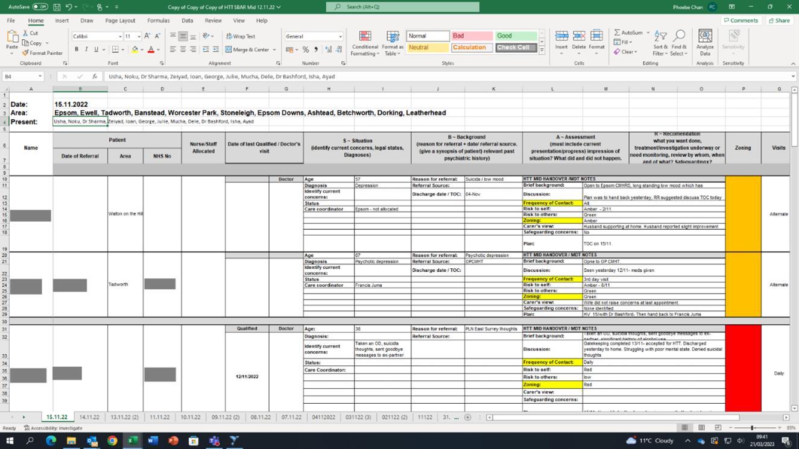
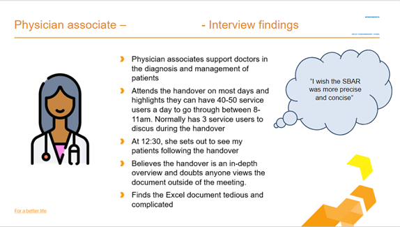
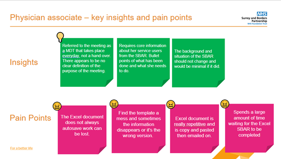
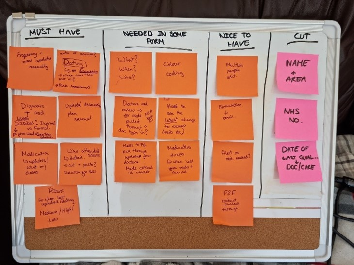
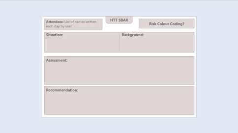
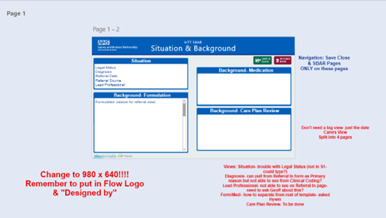
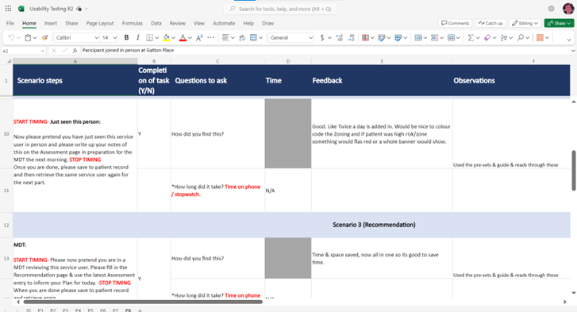
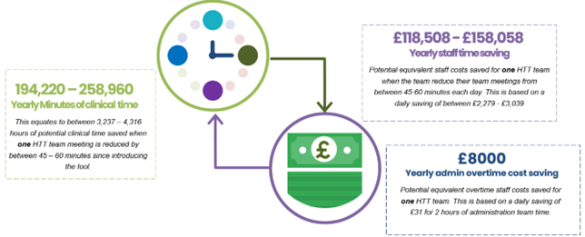
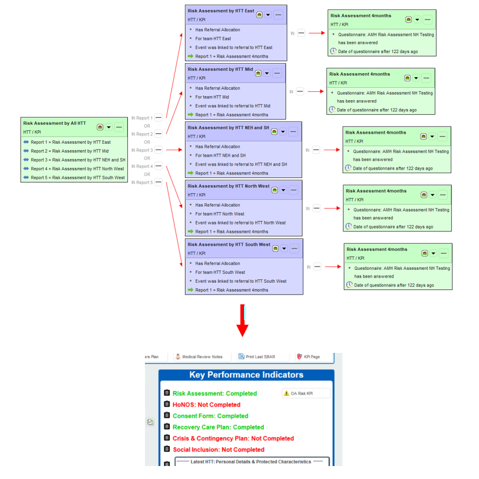

HTT SBAR Project

Project Outline Statement
The SBAR is a handover document, covering the situation, background, assessment and recommendations (SBAR) for each person currently on a Home Treatment Team (HTT) Region’s caseload. This was previously compiled in a spreadsheet which was a cumbersome and time-consuming task. The SBAR was prepared by a qualified nurse ready for morning handover. It was then further updated during the morning handover or Multi Disciplinary Team Meeting (MDT) by a clinician as each service user was discussed.
Not all staff were comfortable using Excel, leading to staff resistance and unnecessary errors. Some information was duplicated in the SBAR from SystmOne (this is a predefined system), which was not only a burden on staff time but also resulted in errors which posed a clinical risk. Previously a lot of clinical lead and managerial support was needed to ensure it was safe and staff were well inducted in using the SBAR.
The image below displays the previous Microsoft Excel solution used by the clinical teams. This product was inefficient and risked the safety of patient data.
Date & Duration:
- September 2022 - September 2023 (Development & Initial Release)
- September 2023 - Present (Post Release Changes)
Research Artifacts
User Personas:
User Pain Points:
Project Goals & Challenges
Pain Points
- Transferring information from Excel to SystmOne takes team administrators 2hrs per day and frequently leads to staff working overtime
- Staff time for patient contact is significantly reduced due to the time taken to manually fill in SBAR information on Excel
- Some HTT localities abandoned the SBAR entirely due to its strain on the service
- Significant Information Governance (IG) risk of storing patient information outside the EPR
- Significant clinical risk due to duplicated information and mixing of patient information within Excel
- Difficulty determining who completed which document and when this was achieved
Goals
- Support a more efficient handover process. Save time when completing the handover document and thus free up precious clinical time resulting in better patient outcomes
- Reduce duplication of information and remove any confusion as to which is the latest version of the SBAR
- Provide a single source of truth for patient data using SystmOne
- Safer storage of the information into the EPR, easily identifying who produced the document and when it was last updated
- Reduce the IG risk that comes from storing patient information outside of the EPR and ensures that all patient information is recorded against the patient record in the EPR
My Role & Contribution
- Supported the development of the design aspects of this project
- Managed two UX Designers, organising testing sessions, product development and designer workload
- Implemented post Go-Live changes to prior to the initial release of this product
- Collaborated with development teams including, Power Bi reporting, Learning & Adoption, and App Support (electronic patient record support)
Throughout this project I reported to our Product Manager. My role involved discussing design progression and project timelines/management. I supervised the day-to-day design work conducted by the UX Designers, managing efficiency and guiding design direction where required.
Alpha Phase
MoSCoW Scale
The use of a Moscow scale helped identify the priorities of the users. This helped us identify the key patient data ward managers and nurses required to efficiently complete the SBAR.
Lo-Fi - Hi-Fi Designs
Developing a Lo-Fi design helped organise the structure of information, including how and where information would sit on a page in the electronic patient record. Designers and researchers were then able to take this forward to users within Co-Design sessions to test the effectiveness of the prototype.
Hi-Fi designs provided a design that would more closely match the final product. This would mainly inform usability testing sessions, gaining an idea as to how usable the product is and whether it meets the essential needs of the users.
Usability Testing
Usability testing helped the team determine whether the product was functional. This this case we found that mixing multiple pages of the SBAR into one window, rather than splitting it out into multiple windows, helped users navigate the solution faster and more efficiently.
Beta Phase
Developing the MVP
During the development process of the product we used a range of different softwares, including Adobe XD, Adobe Illustrator, Miro. Using our design skills within this product we were able to create an overhauled UI experience within SystmOne. The video below provides a run through of the Minimum Viable Product solution built for the SBAR. We worked hard to make sure the flow of information was chronological, reflecting the journey of the user and considering when and where in that timeline they would have to enter particular information. The location and design of data entry boxes (identified with a black box) were also considered to make sure users could identify consistently where they could enter information. This contrasts the blue boxes that indicate where users are able to view information.
User Acceptance Testing
User acceptance testing sessions helped the design team understand where there are gaps in the product. It also helped reassure and cement any design elements that had been successfully built. Users now benefit from this process as they are able to take a look at the developed product. This greatly helped our Learning & Adoption team as gaining buy-in from users speeds up and improves our product go-live/implementation process.
Outcome & Handover
How did we measure success?
During the pilot, support was given by the Flow design team, QI team, Applications Support, Learning and Adoption teams to the HTTs for better adoption of the new digital tool. Flow team also supported HTT Administrators prior to the pilot to migrate data from the existing Excel SBAR over to the new SBAR on SystmOne. This ensured seamless deployment on the go-live day, with no need to reference data in the old product.
The impact of the new pathway so far has been:
- Significant financial savings as the MDT/handover is, on average, 30-60 minutes shorter.
- 86% of staff now only update the plan for that day during the MDT (as opposed to multiple times a day).
- An organised and streamlined MDT/handover.
Researchers observed an increase in HTTs responsiveness alongside increased clarity on roles and responsibilities regarding actions, establishing better patient outcomes and providing easily accessible, updated information. For example, staff stated:
- “We are more confident now that the information which is there is correct…there [had] been instances whereby accidentally the information of different patients would have been cut and pasted [in Excel] ...it improves the patient care and safety.”
- “The errors are much less likely to happen now in terms of the accuracy of recording information and handover.”
- It was “easy to use”, “improved [the] quality of conversations during MDT” and “removed a load off the shoulder of Admin”.
One of the most successful outcomes of the this product was the financial benefit it provided the Home Treatment Team. Following the release of the product we saw a saving of between £118,000 and £158,000 per year. Spread across five Home Treatment Teams the value of saving per year reaches up to £800,000. This provided a significant saving where this resource could be applied to more pressing areas of patient care within the service.
HSJ Award Nomination
As a result of our work on the HTT SBAR the design team was nominated for a national HSJ Award.
Post Go Live Development
Following the go-live process of the product I had to develop and create a series of automated status reports. The primary goal of this was to help clinicians understand which forms have been completed for a patient and which forms haven’t. This also includes dependencies upon whether the patient has been referred to their particular service and that the completion is linked to the patients current episode of care. In order to meet this requirement I had to build a series of reports within the Electronic Patient Record that captured whether a particular patient has been referred into a particular service, had a questionnaire completed on their behalf, and whether that was completed within a certain time period. This report structure was then connected to a status on the front end. The "Completed" or "Not Completed" visual status would then trigger depending on the results of the report. This development was met with a great deal of positive feedback with clinicians stating that this reduced the likelihood of a particular clinical process being missed within the patient care pathway.
What I learned from this project
- I appreciated what good UX/UI design could do to save clinical services significant time and money.
- Enabled me to develop and learn a new way of connecting with the senior medical team. Specifically, this involved designers approaching senior clinicians within their existing schedule rather than expecting clinicians to fit in our own schedule. Medical professionals often find it extremely difficult to spare time to join external meetings, implementing this process made it much easier to get quality user feedback.